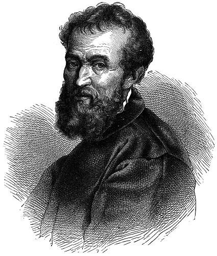
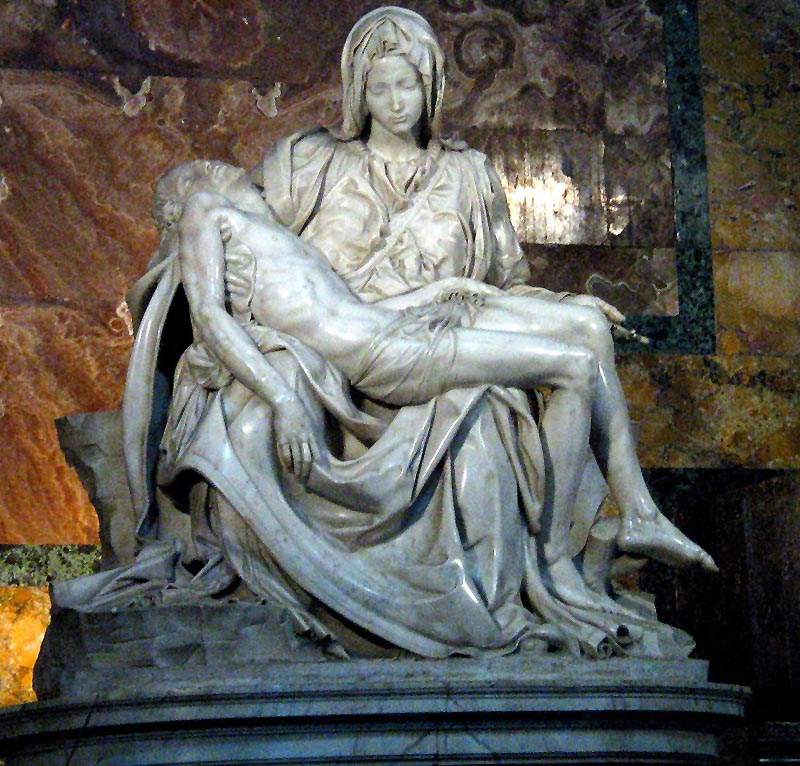
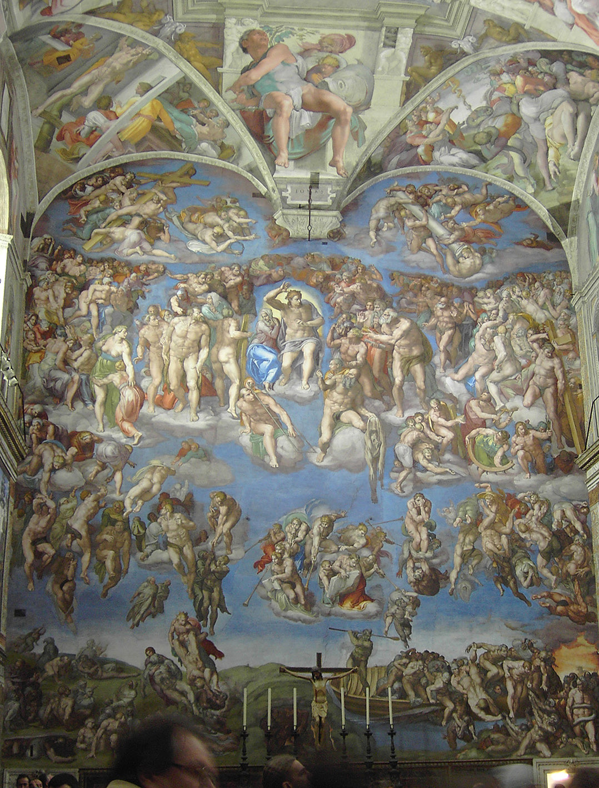

Michelangelo Buonarroti

Michelangelo di Lodovico Buonarroti Simoni (6. bøezna 1475, Caprese – 18. února 1564, Øím) byl jedním z nejznámìjších pøedstavitelù vrcholné italské renesance a manırismu. Proslavil se jako sochaø, architekt a malíø, ale psal také básnì.
�ivotopis
Mládí a studia
Narodil se jako druhı z pìti synù Floren�ana Lodovica di Leonardo Buonarroti Simoni (v té dobì podesty obcí Chiusi a Caprese) a Francesky di Neri di Miniato del Sera. V dubnu roku 1488 ho jeho pøítel Francesco Granacci pøivedl do umìlecké dílny Domenica Ghirlandaia. Michelangelùv otec byl proti tomu aby se jeho syn uèil malovat, chtìl, aby se stal obchodníkem. Domenicovi Ghirlandaiovi se ho nakonec ale podaøilo pøesvìdèit. Nadaného patnáctiletého mladíka si brzy povšiml Lorenzo Nádhernı a pøivedl ho do medicejského paláce, kde se setkávali vıznamní florentští umìlci, literáti a uèenci, kterıch bylo v té dobì plné mìsto. Michelangelo �il poté v paláci a� do Lorenzovy smrti v roce 1492 a bylo tu s ním zacházeno prakticky jako s èlenem rodiny. Proslulé zahrady Medicejskıch se staly jeho další umìleckou školou.
Charakteristika
Michelangelo byl geniálním umìlcem, posedlım hledání dokonalosti a snahou dokázat, �e je nejlepší. Disponoval bohatou pøedstavivostí a fantazií, podobu svıch dìl mìl promyšlenou døíve, ne� na nich zaèal pracovat. Nejednou se proto stalo, �e dílo, s ním� nebyl spokojen, poškodil, nebo� je nedokázal zhotovit pøesnì podle svıch pøedstav. Velkou péèi vìnoval vıbìru kamene. Mramorové bloky si èasto jezdil vybírat do dolù v Carraøe, mnohdy je osobnì i páèil. Vıjimkou byla socha Davida. Pro svoji nejznámìjší plastiku zpracoval Michelangelo kamennı blok nevhodnıch rozmìrù (5 m vysokı, o základnì 1 x 1 m) s mnoha kazy a usazeninami, kterı stál 40 let bez vyu�ití pøed florentskou katedrálou a o jeho� ztvárnìní se neúspìšnì pokusili ji� dva sochaøi. David, kterého Michelangelo dokonèil po dvou a pùl letech práce roku 1504, svého tvùrce proslavil a zajistil mu nesmrtelnost. Mladı sochaø se stal uznávanım umìlcem.
�il støídavì ve Florencii a v Øímì, zpoèátku pùsobil krátce v Bologni. Pracoval pro Medicejské i florentskou republiku, renesanèní pape�e i nejvıznamnìjší církevní hodnostáøe a stal se zámo�nım mu�em. Nikdy se neo�enil a nemìl dìti. Ke stáru psal oslavné básnì na mu�skou krásu, z èeho� se dnes usuzuje, �e byl homosexuál nebo bisexuál.
Za sochu Davida údajnì dostal 900 zlatıch dukátù, co� prı bylo víc, ne� vydìlal Leonardo da Vinci za celı �ivot.
Nejznámìjší díla)
)Sochaøství)

* Pieta (bazilika sv. Petra, Vatikán, 1498-1499)
* David (Galleria dell´Academia, Florencie, 1501-1504, kopie: Piazza della Signoria, Florencie)
* Vzkøíšenı Je�íš (chrám Santa Maria sopra Minerva, Øím)
* Moj�íš (souèást náhrobku pape�e Julia II., chrám sv. Petra v øetìzech, Øím, 1514-1516)
* Pieta s Josefem Aritmatejskım (Museo dell'Opera del Duomo, Florencie - nedokonèená)
* Pieta di Palestrina (Galleria dell´Academia, Florencie)
* Pieta Rondanini (Civiche Raccolte d'Arte del Castello Sforzesco, Milán - poslední Michelangelovo dílo, nedokonèená)
Malíøství

* Stvoøení svìta (Sixtinská kaple, Vatikán - nástropní freska, 1508-1512)
* Poslední soud (Sixtinská kaple, Vatikán - freska na oltáøní stìnì, 1536-1541)
* Svatá Rodina - Tondo Doni (Galerie Uffizi, Florencie)
Architektura
* Bibliotheca Medicea Laurenziana (Florencie)
* Nová sakristie kostela San Lorenzo (Florencie - architektura a sochaøská vızdoba)
* Kapitolské námìstí (Øím)
* Palác Farnese (Øím, dokonèení 2.patra)
* Bazilika sv. Petra ve Vatikánu (ústøední prostor a kopule chrámu, 1547-1564)
Knihy o nìm
* Kámen a bolest (Karel Schulz) – historickı román
* �ivotopis Michelangela Buonarrotiho (Ascanio Condivi) - �ivotopis vydanı ještì za Michelangelova �ivota
* �ivot Michelangelùv (Romain Rolland) - �ivotopis
Zdroj wikipedia